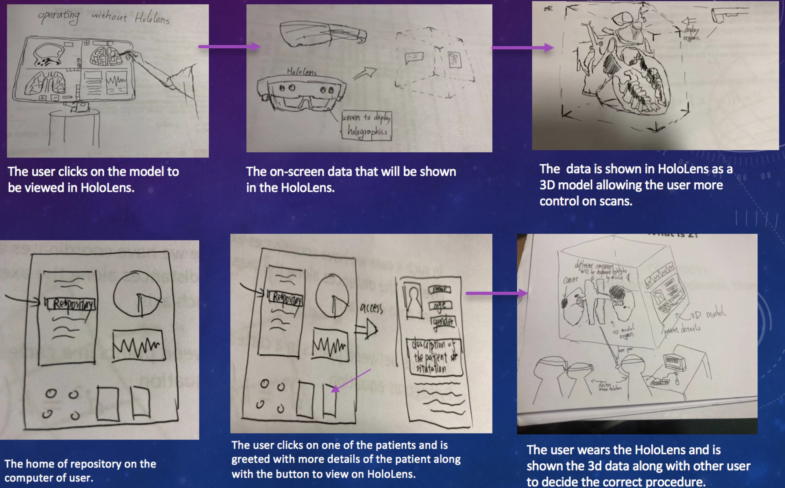
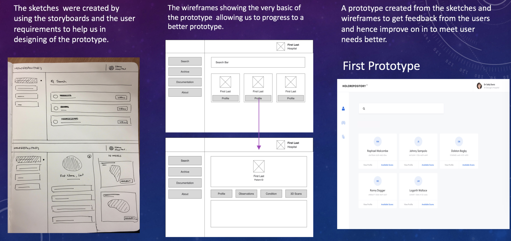
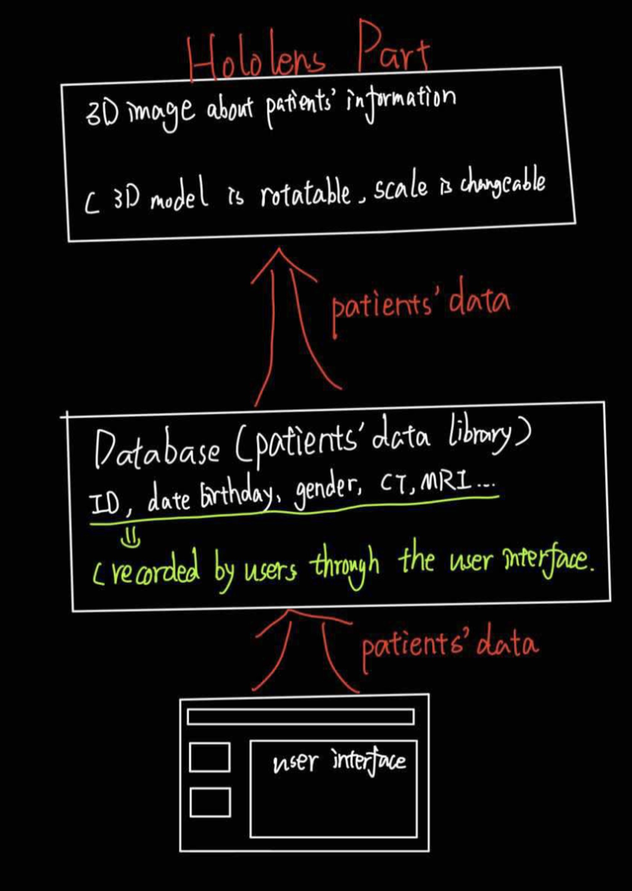

Content
Requirement
Research
HCI
Prototype
Requirement
-
Introduction to project background and client

-
Project goals
_____________
-
Requirement gathering , requirements sealing with the client
_____________

-
Persona
_____________

-
StoryBoards
______________
-
MoSCoW requirement list
_____________
-
User case
_______________
Research
-
Review existing solutions
_____________
-
Related technologies
_____________
-
Summary of final decision
_____________
-
References
_____________
HCI
-
Design Principles and evaluation of prototype
After gathering all the requirements from the our client , we have built up a basic prototype to show how our respository interact with users. Such prototype include the details that the users requested us along with in response to the heuristic evaluation. Since our project is actually a web app staff , so we have to design an relative simple but functional user interface for users. Our team has used two types of evaluation to make sure the prototype is evaluated from both the user and the expert perspective. The diagram below is a basic prototype of our user interface.

-
Paper sketches
Storyboards are finished by hand drawing , we focus on showing how our project work under real world case, for example , while doctors discussing how to manage the procedure of a surgery.
 -
Wireframe
We used sketches to give ourselves an idea of how the design of the repository should look like at the very basic. Then the wireframes were created for the two main pages of the repository that will be used by users.

Prototype
-
System architecture diagram
For the system architecture , we focus on the
 -
implementation of finished functionalities
For the implementation of finished functionalities , we make a summary for that. The list below display what functionalities we just finished.
1. A responsive web layout implemented using bootstrap in React
2. Ability to search using tags
3. Ability to test the site locally using a Tomcat server and POST requests